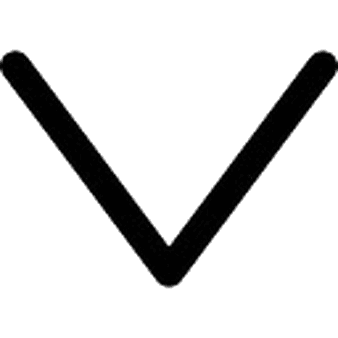

- Accueil
- Thème de recherche 
- L'équipe
- Offres de stages et thèses
- Publications
- ANR BioDesign
- TechnoValo
L’idée de ce projet est de s’inspirer des endosquelettes et de la structure des os pour venir l’appliquer aux pièces mécaniques dans le but de les alléger. De récents travaux de l’équipe CBI ISM [Au. 2018] ont mis en place une méthode de bio-inspiration de la structure de l’os pour l’appliquer aux pièces mécaniques. Ces travaux ont démontré dans le cas de la flexion trois points que la structure bio-inspirée donnait de meilleurs résultats que la méthode d’optimisation topologique couramment utilisée en mécanique. Ces premiers résultats laissent supposer un fort potentiel pour trouver des structures plus optimales en s’inspirant de la nature. Cette bio-inspiration de la structure des os appliquée au design des pièces mécaniques est notamment rendue possible aujourd’hui grâce au développement de la fabrication additive.